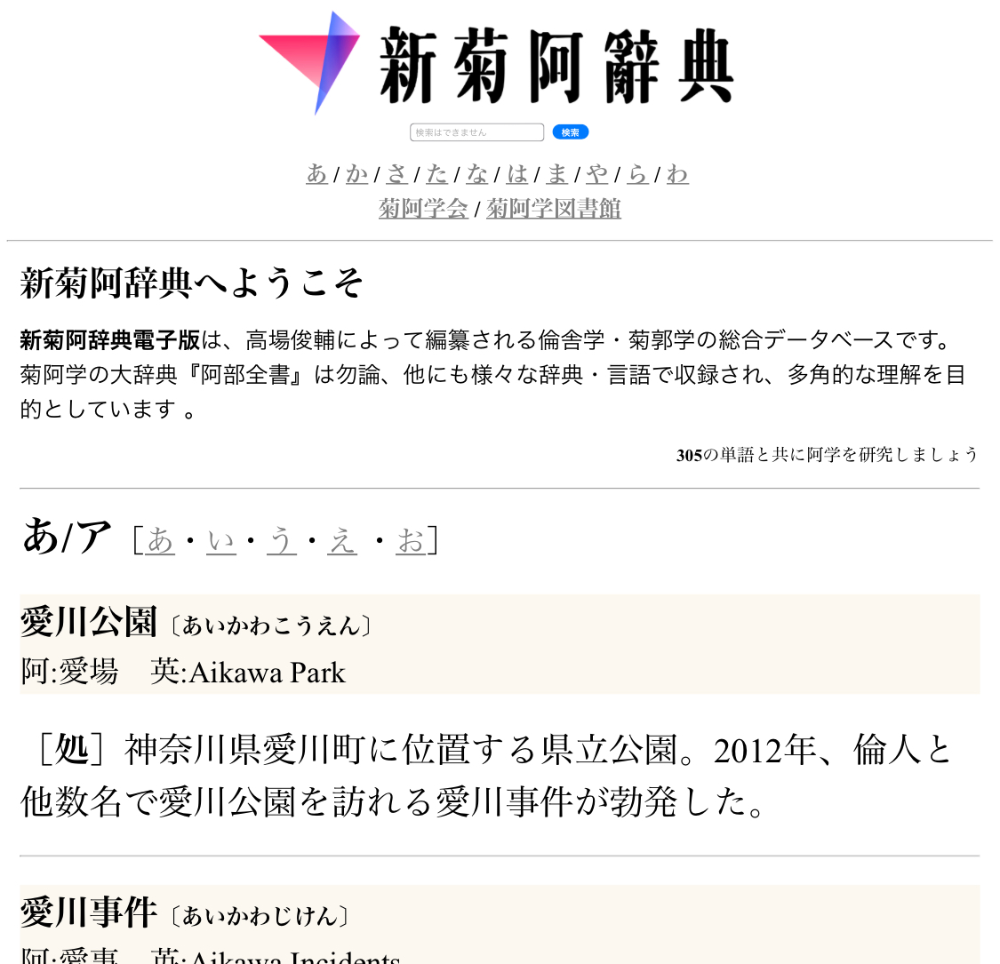
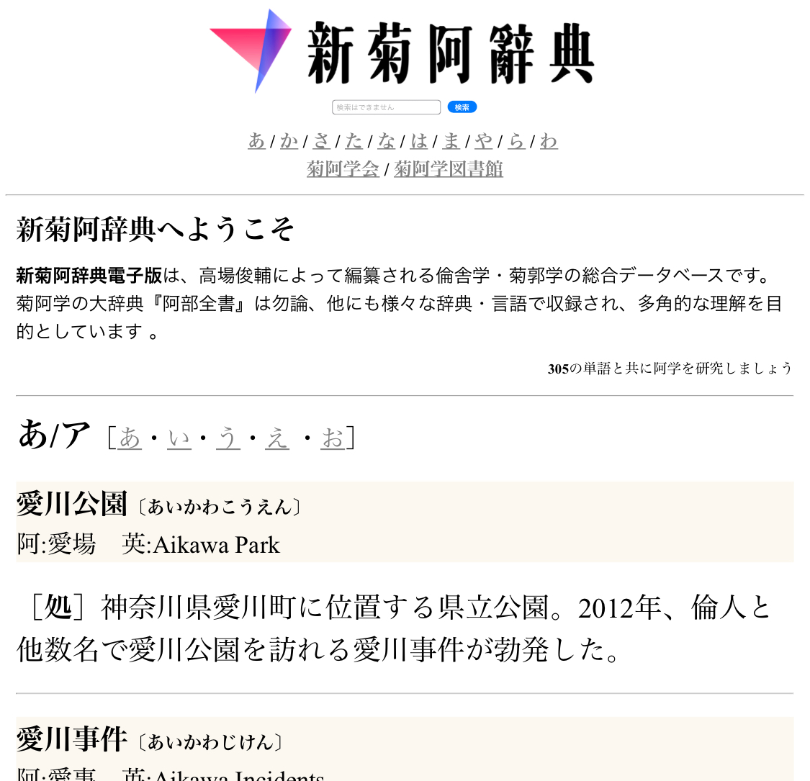
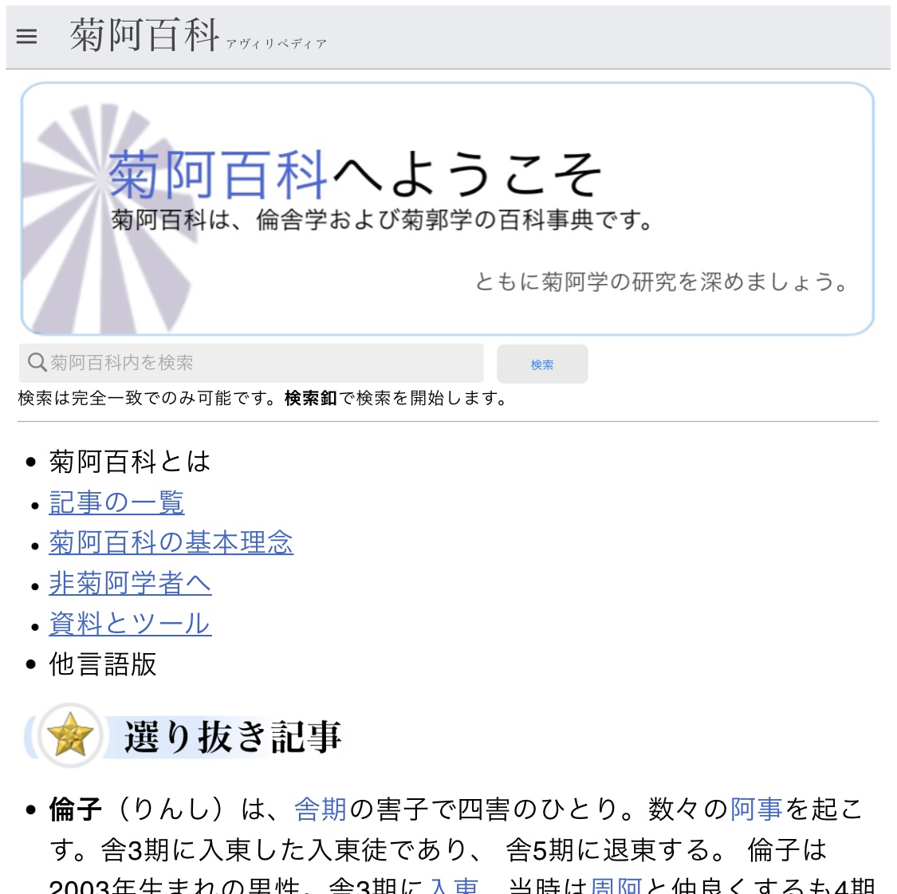
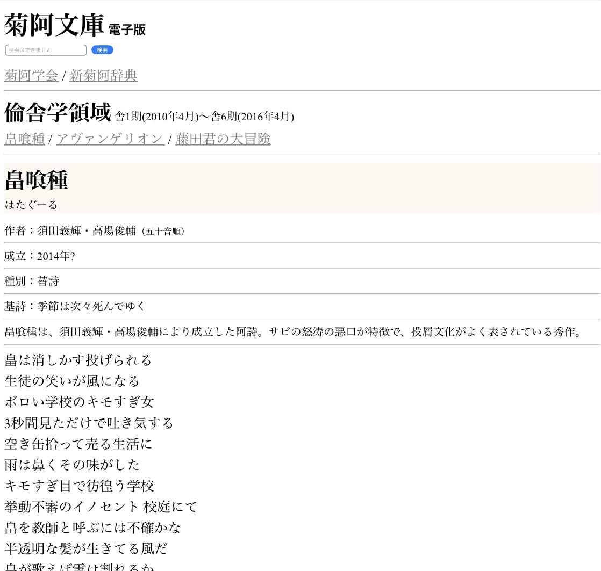

新菊阿辭典は、阿菊事や菊阿単語や全ての基礎菊阿学用語を網羅した総合辞書です。これまでに4回の改訂が行われており、より正確で実用的な単語を厳選して収録しています。

菊阿百科（アヴィリペディア）は、菊阿学の百科事典です。人物や事件に注目した豊富な情報を記載しており、また最新の研究を閲覧することもできます。

菊阿文庫は、菊阿期の名作や替歌、資料などを保存する機関です。
追加予定
PLANS
要望・依頼は学会フォームまたはメールアドレスまでお問合せ下さい。
- 指定害悪観測警報の実装
- 共有保存機構の実装
- 資料会映像資料の学会サイト上再構築
- 教諭名鑑の実装
学会内検索
SEARCH in site
検索は完全一致でのみ可能です。
検索釦で検索を開始します。
学会広報Council News